2027年“全国大学生计算机系统能力大赛操作系统设计赛”火热报名中！¶
1. 操作系统设计赛简介¶
📢 什么是操作系统设计赛?
-
全称： 全国大学生计算机系统能力大赛操作系统设计赛
- 由教育部高等学校计算机类专业教学指导委员会和系统能力培养研究专家组共同发起。
- 比赛分为两个赛道： 内核赛道 和 功能赛道
- 大赛官网：https://os.educg.net
-
内核赛道：
- 制作一个 完整的内核 ，并同时支持
RISC-V64和LoongArch64两种硬件平台 - 通过赛方提供的用户测试，有余力的队伍还可以去支持
python，rust，redis...... - 功能 与 性能 的比拼
- 赛程安排 ：
- 初赛 ：编写内核源码，能在基于
QEMU的RISC-V64和LoongArch64模拟计算机中运行，并通过初赛侧例。 - 决赛 ：改进内核源码，能在
RISC-V64和LoongArch64模拟/物理计算机中运行，并通过初赛+决赛侧例。 - 现场赛 ：改进内核源码，能在
RISC-V64和LoongArch64模拟/物理计算机中运行，并通过现场赛侧例。 - 现场答辩 ：介绍内核代码的设计实现过程，演示规定成果和自选成果，回答评审专家提问。
- 初赛 ：编写内核源码，能在基于
- 制作一个 完整的内核 ，并同时支持
-
功能赛道：
- 实现系统中的 某项 前沿功能
- 多种课题 任选，涉及调度、通信、存储、安全、应用等不同领域
- 赛程安排 ：
- 初赛 ：选择题目，完成项目涉及开发源码，文档撰写，视频汇报等。
- 决赛 ：改进项目，开发源码，开发过程和文档撰写，视频汇报等。
- 现场答辩 ：演示项目成果，回答评审专家提问。
-
关于比赛组队：
- 不限制学校的参赛队伍数，一支队伍最多三人
-
比赛重要时间点：
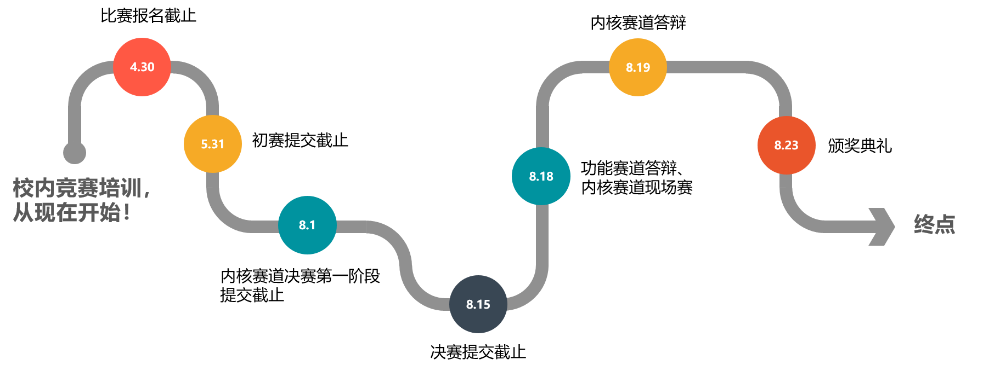
-
比赛奖项设置：
- 特等奖，1队，颁发团队奖金及获奖证书。（该奖项可空缺）
- 一等奖，不少于2队，颁发团队奖金及获奖证书。
- 二等奖，不少于4队，颁发团队奖金及获奖证书。
- 三等奖，不少于8队，颁发团队奖金及获奖证书。
-
注：入围决赛即获得优胜奖， 几乎所有队伍都能拿到 ~
2. 参赛要求¶
📢 哪些同学适合参赛?
== 写个操作系统 而已，有手就行==；- 对操作系统的 完整体系 充满兴趣；
-
对内核 优化 充满想法
- 内核赛道欢迎你！
-
希望尝试 科研 or 提前接触 工业界
-
希望对 前沿、未知 的技术进行探索
- 功能赛道欢迎你！
3. 参赛收获¶
3.1 校内收获¶
📢 在学校内，你能收获什么?
-
接触并亲自尝试 前沿 的技术
-
结识 很多行业大佬、同龄大佬
- 获得对操作系统整个体系或某个领域的深刻 理解
- 快速提升动手能力和创新能力，丰富自己的软硬件 技术栈
- 难得的机会：把大胆的 想法变为现实
- 获得 综测加分 机会，奖学金++
- 对未来的 升学 有非常大的帮助
- ( 一笔非常可观的奖金：参加比赛，顺便挣个W，妈妈再也不用担心我生活过得不好了
3.2 校外收获¶
📢 在学校外，你又能收获什么?
- 实习Offer率++：暑期华为实习Offer率直升 十几个 百分点（华为急缺系统性人才）
- 顶级Offer率++：某几个队长一不小心就收割了华为的 研究生才能拿到的顶级Offer
4. 比赛准备¶
📢 这个比赛难吗?
难 ，难得很
- 想要取得好成绩，面对的一切都是 新 的
- 新的知识，新的语言，新的测评，新的工具，新的要求 ...
-
系统的 调试 常常涉及硬件架构，难度大大提升
-
赛程很长 ，最重要的是 兴趣和坚持 ，很多队伍到后面会放弃，肝到胜利
- 事实上，大部分队伍从 年初 就开始备赛， 一些队伍甚至前一年就有所准备，还有参加了两届的队员
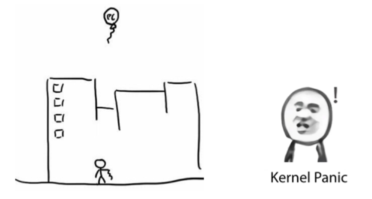
最关键的是， 系统的设计没有上限 ，想要做好就必须有所付出。
5. 竞赛成果¶
5.1 我们的战绩¶
历届获奖名单
点击带链接的队伍名称，可查看开源作品。
| 年份 | 赛道 | 奖项 | 队伍名称 | 队员姓名 |
|---|---|---|---|---|
| 2021第一届 | 内核实现 | 一等奖赛道排名第一 | UltraOS | 李程浩、 |
| 功能设计 | 一等奖赛道排名第一 | HoitFS | 潘延麒、 | |
| 功能设计 | 二等奖 | 压缩鸭 | 王海涛、 | |
| 内核实现 | 三等奖 | 啊普鲁派哒哒哒;DROP DATABASE teams; | 黎庚祉、 | |
| 2022第二届 | 内核实现 | 一等奖 | FTL OS | 叶自立、 |
| 内核实现 | 一等奖 | OopS | 张艺枫、 | |
| 功能设计 | 一等奖 | LMY | 于伯淳、 | |
| 内核实现 | 二等奖 | 健康向上好青年 | 丁浩卓、 | |
| 功能设计 | 二等奖 | 编译通过求求了 | 黄浩、 | |
| 功能设计 | 二等奖 | F-Tutorials | 赵鹏宇、 | |
| 内核实现 | 优胜奖 | 随便取名不队 | 潘智伟、 | |
| 2023第三届 | 内核实现 | 一等奖 | Titanix | 曾培鑫、 |
| 功能设计 | 一等奖 | BoesFS | 杨大荣、 | |
| 功能设计 | 一等奖 | COS | 段子豪、 | |
| 功能设计 | 一等奖 | BugMaker | 孙铎、 | |
| 内核实现 | 二等奖 | MankorOS | 满洋、 | |
| 功能设计 | 二等奖 | 刘航志强 | 刘航、 | |
| 内核实现 | 三等奖 | MoOS | 卢郡然、 | |
| 功能设计 | 三等奖 | 嘉然今天吃OS | 黄振业、 | |
| 功能设计 | 三等奖 | RethinkFS | ||
| 2024第四届 | 内核实现 | 一等奖 | Phoenix | 陈睿玮、 |
| 功能设计 | 二等奖 | MEMCOS | 张洛源、 | |
| 功能设计 | 二等奖 | MemoryWatchdog | 李羿廷、 | |
| 功能设计 | 二等奖 | code+7 | 卿正宇、 | |
| 功能设计 | 二等奖 | j2y::fans | 王柣骁、 | |
| 功能设计 | 二等奖 | 叉子联合平行线 | 黄俊杰、 | |
| 2025第五届 | 内核实现 | 一等奖 | Chronix | 肖嘉誉、 |
| 内核实现 | 一等奖 | rustflyer | 关雄正、 | |
| 内核实现 | 一等奖 | Del0n1x | 姚俊杰、 | |
| 功能设计 | 一等奖 | 我重生了这一世要夺回属于我的OS冠军 | 李紫剑、 | |
| 功能设计 | 一等奖 | 黑天鹅 | 覃煜淮、 | |
| 功能设计 | 一等奖 | FastPoke | 许辰涛、 | |
| 内核实现 | 二等奖 | AstranciA | 曾熙晨、 | |
| 功能设计 | 二等奖 | 分久必合 | 吴比乐、 | |
| 功能设计 | 二等奖 | NeuTrace | 唐梓涵、 | |
| 功能设计 | 三等奖 | RustForgeAI | 连牛、 | |
| 功能设计 | 三等奖 | 啥啥都队 | 林义武、 | |
| 2026第六届 | 内核实现 | 一等奖 | Unicus | 颜晨、 |
| 内核实现 | 一等奖 | ヰ世界电子开发部 | 张正翰、 | |
| 功能挑战 | 一等奖 | 一起去爬梧桐山 | 苏安炫、 | |
| 功能挑战 | 一等奖 | 故障机器人 | 陈浩、 | |
| 内核实现 | 二等奖 | 老被炸 | 杨岩琰、 | |
| 功能挑战 | 二等奖 | herun | 周毅铭、 | |
| 功能挑战 | 二等奖 | 日志写了吗 | 俞杰、 | |
| 内核实现 | 三等奖 | Somber | 周泽立、 | |
| 功能挑战 | 三等奖 | 芯想事成 | 成奕可、 | |
| 功能挑战 | 三等奖 | 名字起什么队 | 温非凡、 |
获奖新闻报道：
- 2021年第一届：获奖总数全国第一！哈工大（深圳）学子在全国大学生计算机系统能力大赛中收获四项大奖
- 2022年第二届：获奖数量全国居首！哈工大（深圳）学子在全国大学生操作系统设计总赛中表现优异
- 2023年第三届：一等奖+4！深圳校区学子在全国大学生操作系统设计赛中创历史最佳战绩
- 2024年第四届：连续四年全国一等奖！哈工大深圳校区学子在全国大学生操作系统设计赛中再创佳绩
- 2025年第五届：哈工大深圳校区学子在全国大学生计算机系统能力大赛操作系统设计赛再创佳绩
- 2026年第六届：一等奖总数全国第一！哈工大深圳校区学子在全国大学生操作系统设计赛中获佳绩
5.2 往年一等奖队伍获奖感言¶
5.2.1 2021 年 · UltraOS · 内核实现¶
第一届内核赛道一等奖：UltraOS
团队成员：李程浩，18级本科；宫浩辰，18级本科；任翔宇，18级本科
“项目历时216天，在此期间编写代码149天，UltraOS团队最终产出了约一万行Rust语言代码（不包括迭代代码）。UltraOS成长是迅速的，从支持13条非标准系统调用到59条系统调用，从只支持一个简易的文件系统到FAT32-VFS和可拓展设备接口等具有可拓展的抽象，从单核到多核，从缓慢迈向高性能。每一件事都是挑战，但每一件事都是成长。”
作品开源：点这里
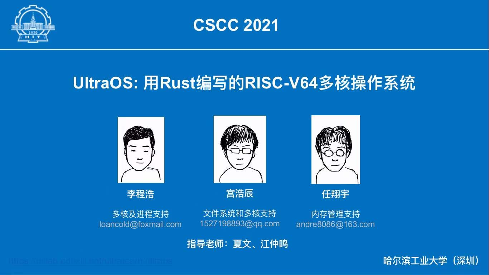
5.2.2 2021 年 · HoitFS · 功能设计¶
第一届功能赛道一等奖：HoitFS
团队成员：潘延麒，18级本科；胡智胜，18级本科；张楠，18级本科
“我们的项目以JFFS2文件系统为原型，对其SylixOS上进行二次开发，并针对JFFS2存在的一些问题进行针对性优化(优化策略比较简单)，形成了HoitFS，最后通过与SPIFFS文件系统做对比，发现我们HoitFS的性能相对SPIFFS来说有明显的优势。本项目历时近一年，期间一度感到力不从心，但在老师的指导下，团队成员的互相鼓励下，最后都咬牙坚持到了决赛。”
作品开源：点这里
5.2.3 2022 年 · FTL OS · 内核实现¶
第二届内核赛道一等奖：FTL OS
团队成员：叶自立，19级本科；樊博，20级本科；李羿廷，19级本科
“非常荣幸能够获得大赛一等奖，这次比赛中我们一路披荆斩棘，通过了全部的功能测试，并在决赛第二阶段全程保持性能分第一。
我们充满梦想，FTL意为Faster Than Light，它蕴含了操作系统对性能的渴望。为了实现这一目标，我们用了与众不同的开发方式：我们从零开始，先编写文档，从起步就进行大量优化。我们乐观地认为只要应用了一切可能的优化，FTLOS就能达到极致的、后无来者的性能。从结果来看，此方案大体成功，我们全程性能分第一，但因为调研不足的原因，文件系统的错误设计影响了重构，FTLOS无法在全部的测试点上获得第一，也让我们没有太多时间去移植真实应用程序。
这是我们第一次参加系统能力大赛，它让我们接触到了大量无法从课本上学到的知识，使我们了解了现代操作系统的运行方式，对操作系统有了更深层次的理解，还显著提升了工程实践能力。感谢全部队员、伙伴队伍的努力，感谢夏文、仇洁婷老师的倾力帮助，也感谢所有在比赛中实时开源代码、展示文档的参赛队伍。愿比赛在未来更加完善，越来越好。”
作品开源：点这里
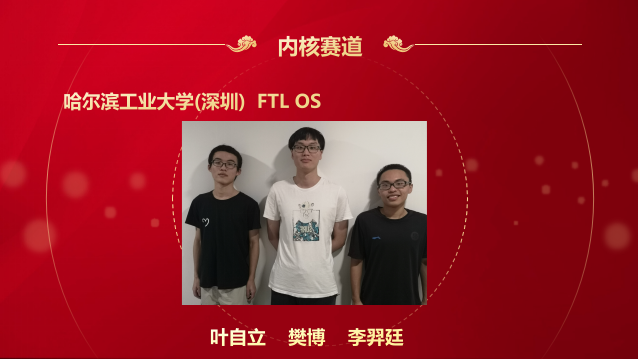
5.2.4 2022 年 · OopS · 内核实现¶
第二届内核赛道一等奖：OopS
团队成员：张艺枫，19级本科；李诺舟，19级本科；刘嘉琛，19级本科
“OopS是一个用Rust编写的RISC-V64多核操作系统，项目总历时约7个月。我们团队从今年的寒假期间就开始学习rust及操作系统相关知识，为该比赛做准备。
在开发前，我们考虑到从0开始设计一个内核会带来大量的bug和时间开销，所以我们决定参考rCore-Tutorial快速开发出一个基本的内核。之后，我们比较顺利地通过了初赛的测试，这给了我们信心，于是我们对原本的基础架构做了大量修改。通过不断地踩坑和重构，并结合其他内核的设计和我们的思考，最终打造出了现在的OopS内核。
通过这次比赛，加深了我们对操作系统的理解，提升了我们的工程能力。此外，本次比赛让我们更加理解了开源的精神，我们的心态也从相互竞争转变为了相互学习。我们发现，与第一届参赛作品相比，本届参赛作品在功能和性能方面都有了不小的提升。这要感谢组委会和主办方为选手提供了一个平台，让我们有机会吸取往届参赛作品的经验，踩在巨人的肩膀上并更进一步。以后的参赛作品无疑也会比我们这届的作品要更加优秀。
在这里，还要感谢同校的参赛队伍和指导老师的帮助和指导，特别是第一届参赛选手黎庚祉学长给我们传授了大量的经验和灵感。”
作品开源：点这里
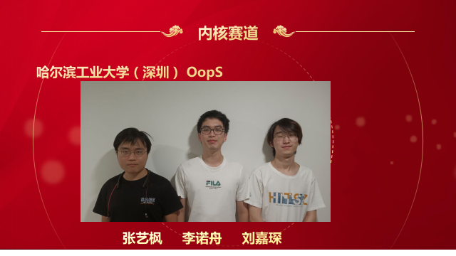
5.2.5 2022 年 · LMY · 功能设计¶
第二届功能赛道一等奖：LMY
团队成员：于伯淳，20级本科；满洋，20级本科；李怡凯，19级本科
“很荣幸能够在本次操作系统设计赛功能赛道中获得一等奖，在大赛结束之际，回想参赛以来的点点滴滴，我们感概颇多。
最初决定参赛，是偶然在学校的Linux交流群看到老师对操作系统功能赛的宣传。那时我和满洋没有完整学习过操作系统，但凭着对OS的兴趣，我们决定试着参赛。
选定赛题时，经验不足的我们本想选取一个较为简单的题目；但两位指导老师鼓励我们选择更为复杂的题目proj120——智能化的操作系统异常检测，同时李怡凯学长的加入也为我们带来更多信心，我们最终接受了挑战。
初期，我们凭借老师悉心的指导，与华为专家的沟通，努力寻找赛题的切入点，之后便是按部就班地实现。由于项目经验不足，后期时间安排得很紧张，但也跌跌撞撞进入了决赛。决赛阶段，我们实现了老师建议的创新点，并把20多页的文档完善至近80页。为了准备答辩，PPT也在老师的指导下更新了一版又一版。
最终的结果出乎我们的意料，但回顾一路以来付出的心血和老师的耳提面授，却又显得理所应当。在大赛中，我们的专业素养得到了锻炼，文档编写和交流合作的能力也得到了提高。虽然辛苦，但也为今后的专业道路倾注了更深厚的力量。”
作品开源：点这里
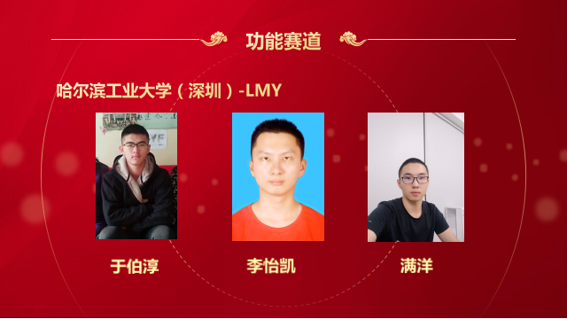
5.2.6 2023 年 · Titanix · 内核实现¶
第三届内核赛道一等奖：Titanix
团队成员：曾培鑫，20级本科；陈佳豪，20级本科；任秦江，20级本科
“非常荣幸获得了内核赛道的一等奖，在参赛的六个月里，我们对内核不断地重构与扩展，通过了所有的测试用例，在决赛的现场赛榜单上取得了第一名的成绩。
Titanix（Titanic-nix），意味着我们希望编写出一个如泰坦般健壮、尽可能支持更多的功能、同时符合POSIX规范的类Unix操作系统。我们以无栈协程为调度基础，结合Rust的异步机制实现了一个高效的分时多任务异步内核；在此基础上实现了许多模块，如内存、文件系统、网络、驱动等；另外，我们的内核立足现实，能够运行gcc、redis、vi、http服务器等现实应用；我们的内核具有丰富的功能与较高的可扩展性。
这次比赛给了我们团队成员一次编写较为大型的项目（约两万四千行代码）的机会。我们在开发中合理分工、规范不同分支的提交合并；我们查阅了大量资料，学习业界黄金标准linux，在课内基础上不断拓宽，大大加深了对操作系统的理解；我们深度使用了许多开发调试工具（gdb、objdump、strace等），结合规范的分级日志，提高了工程能力与编程能力。
最后，感谢几位指导老师的倾力帮助、往届学长的经验传授以及同校参赛队伍的交流分享。”
作品开源：点这里
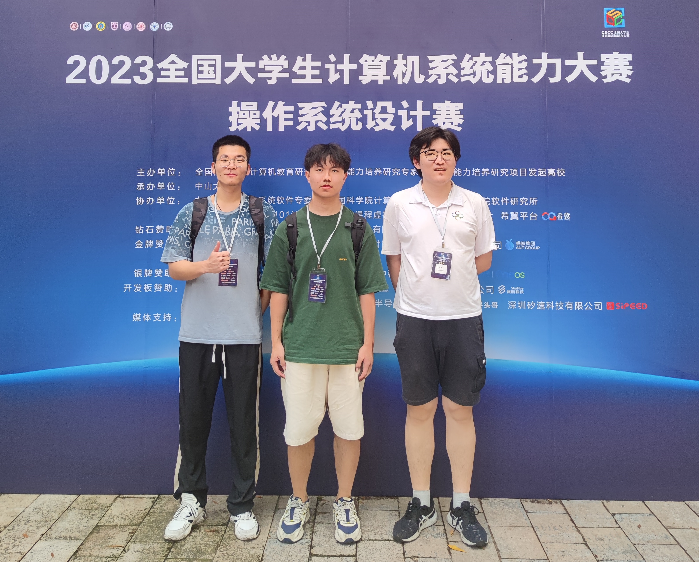
5.2.7 2023 年 · BoesFS · 功能设计¶
第三届功能赛道一等奖：BoesFS
团队成员：杨大荣，20级本科；林颀聪，20级本科；孙赫辰，20级本科
“很荣幸能够获得本次操作系统设计赛功能挑战赛道的一等奖，这离不开五个月来老师们的耐心指导以及队友之间的相互支持。
BoesFS, Based on eBPF Sandboxing Filesystem。BoesFS项目围绕eBPF、可堆叠文件系统、FaaS应用几个领域展开探索。我们团队经过五个月的项目开发，贡献了近2w行代码，12w字维护文档，推出了一个轻量级的文件安全沙盒层，并尝试应用到FaaS等业务场景中，取得了很好的效果。
考虑到eBPF近年来的大火，并能和传统的文件系统结合，两者结合或许能有不一样的花火，这个创新的角度一下就吸引了我们。经过和老师研究实现难度后，我们决定选择这个赛题。我们和校内老师和项目老师经过深入讨论，确定了整个项目的大致方向后，开始学习各个模块所需的知识，例如完整阅读了有关eBPF、VFS层、可堆叠文件系统、FaaS开源项目等大量源码等等。然后按部就班的进行设计和开发，从顶层设计整个项目架构，并逐渐从开发简单的demo验证想法，最终到完整完善整个项目。
通过本次大赛，极大丰富了我们对操作系统一些前沿技术的了解，并针对新的场景能设计出自己的解决方案，促进了我们对这些领域的兴趣，想继续在相关领域做更多的有关探索和研究。最后感谢校内老师夏老师、李老师、仇老师以及校外老师施老师和郑老师的耐心指导和帮助，祝愿大赛能越办越好。”
作品开源：点这里
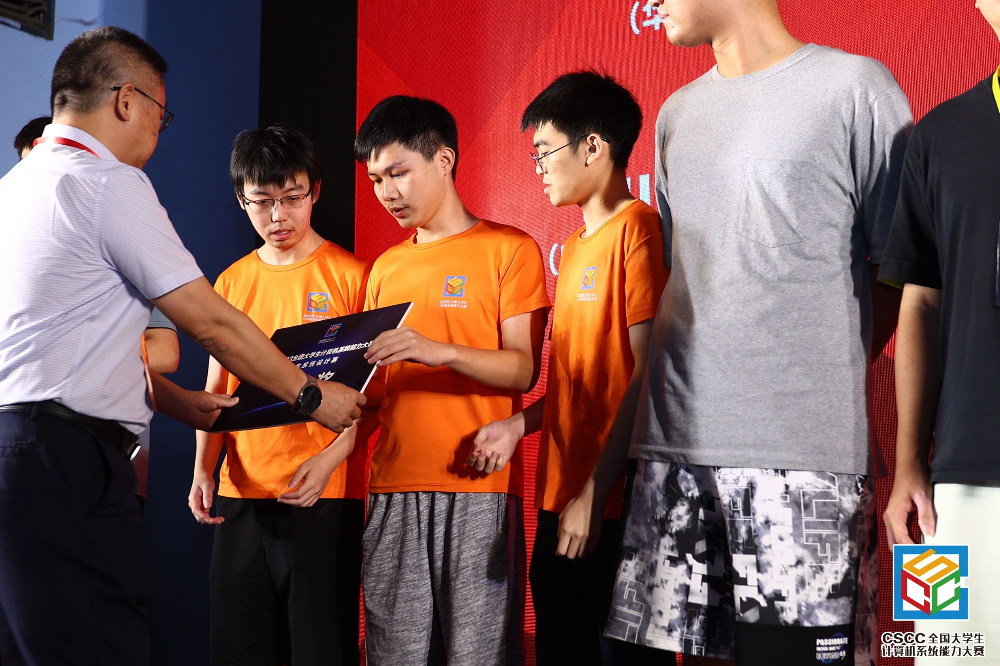
5.2.8 2023 年 · COS · 功能设计¶
第三届功能赛道一等奖：COS
团队成员：段子豪，20级本科；谢岸峰，20级本科；黄雯萱，21级本科
“非常荣幸能够获得一等奖，比赛中我们一起克服挫折，团队成员各自发挥长处，这是团队的胜利。
赛题对顶会与代码阅读，编程能力提出了极高的要求。我们先后阅读了顶会ghost（sosp），几万行的ghost与ext源代码。完成后我们开始在方向上迷茫：从零开始修改linux调度难度太大，千万行的庞大系统；基于他人成果没有创新。最后我们两方面都抓：一部分队员基于他人成果优化，队长修改linux的调度机制。在团队成员的一起努力下成功地完成了预期目标。最后的开发难度与亮眼的优化效果折服了评委。
参加操作系统大赛让我们接触到业界最新操作系统的研究方向，并且极大地提升了我们的代码能力（魔改linux，修改顶会论文代码）。让我们印象深刻的是指导老师的负责，感谢三位老师！最后也希望大赛越办越好！”
作品开源：点这里
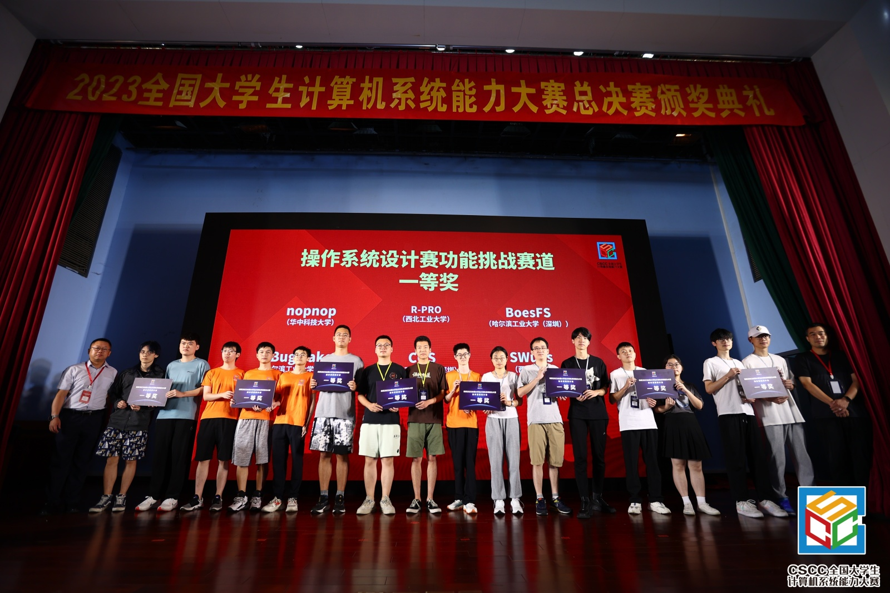
5.2.9 2023 年 · BugMaker · 功能设计¶
第三届功能赛道一等奖：BugMaker
团队成员：孙铎，20级本科；俞文博，20级本科；赖嘉欣，20级本科
“很荣幸取得操作系统功能赛道一等奖，感谢老师们的耐心指导，感谢队员们的不懈努力。
我们的项目是基于SPDK用户态存储驱动构建多路径软件，设计实现了路径聚合、路径选择、故障处理和负载均衡等功能，可以用于虚拟化与存储区域网络结合的应用场景。
我们之前并不熟悉操作系统存储开发相关的技术，基于用户态驱动的开发又不同于我们比较熟悉的Linux内核态驱动，这需要我们去阅读大量的SPDK源码，才摸索清楚了SPDK进行I/O操作的大致流程，找到了多路径模块的切入点，接下来才开始核心的开发工作。在开发多路径方案时，为了适配SPDK用户态驱动，我们需要使用gdb进行多轮的调试工作，一行代码要修改很多次才能保证模块的正常运行。最后，我们还要细心搭建合理的测试场景，才能发挥出多路径软件的作用。
这次操作系统功能赛让我们收获了很多，除了学习到用户态存储相关知识以外，还提升了我们面对陌生领域时的探索能力，这是一次很宝贵的参赛经历。祝愿全国大学生计算机系统能力大赛越办越好！”
作品开源：点这里
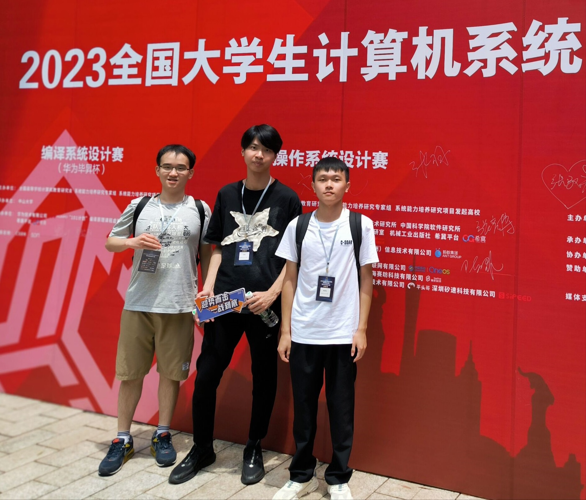
5.2.10 2024 年 · Phoenix · 内核实现¶
第四届内核赛道一等奖：Phoenix
团队成员：陈睿玮，21级本科；石全，21级本科；王华杰，21级本科
“非常荣幸能够获得内核赛道的一等奖。在这场为期六个月的竞赛中，我们为Phoenix内核贡献了2.7w行代码，提交了591次commit，最终获得了一等奖，并在RISC-V赛道上取得了第一名的好成绩。这一成绩凝聚了我们团队无数的努力与坚持。
最初，我们受到了Linus Torvalds创建Linux的故事启发，觉得写内核是件非常“酷”的事情，因此决定挑战自己，参加内核赛道的竞赛。 我们从寒假便开始为比赛做准备，从零开始学习Rust语言和rCore Tutorial，再从零编写自己的操作系统内核，并在这个基础上不断扩展、优化和重构。对于我们这些零基础小白，这是一个巨大的挑战。然而，比赛提供了一个开源的平台，使我们能够接触到往届所有优秀作品的代码实现，这不仅降低了参赛的难度，也让我们在学习和模仿优秀作品的基础上快速成长。
在从零实现内核的过程中，我们对操作系统底层机制的理解更加深入，我们的编程能力也在实战中得到了极大的提升。 最后，衷心感谢夏文老师和仇洁婷老师在整个比赛过程中给予的支持与帮助。同时，也要特别感谢往届学长的宝贵经验传授，尤其是曾培鑫和满洋学长的无私指导，使我们在技术和思路上少走了很多弯路。”
作品开源：点这里
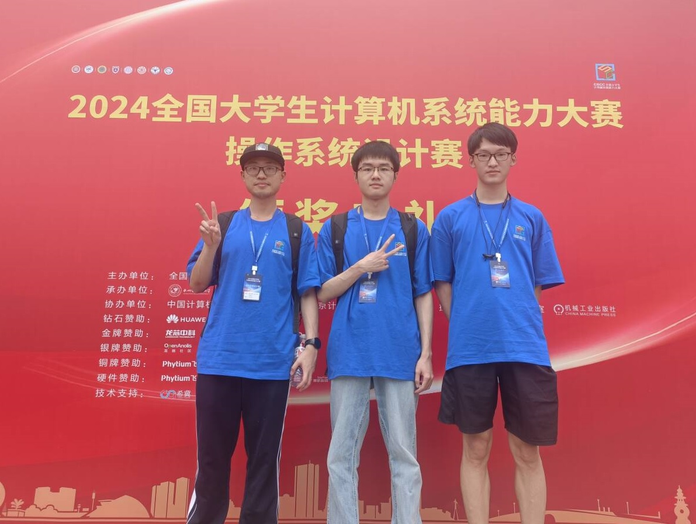
5.2.11 2025 年 · Chronix · 内核实现¶
第五届内核赛道一等奖：Chronix
团队成员：肖嘉誉，23级本科；欧阳天麟，23级本科；周立诚，23级本科
“我们队伍组建离不开机缘巧合。在大二上学期结束前，我得知同班的欧阳天麟同学也有打os赛的想法，在os赛的启动会时再招募了同级的周立诚同学。可能的优势是，我们都或多或少地了解过os内核，并且有挑战困难的勇气。
比赛动机和目标：深入学习操作系统，锻炼系统级编程能力，积累项目经验，认识一些大佬。愿景：我们希望我们的内核作品可以支持更多功能、更加稳定；希望学会和他人交流合作；希望可以取得不错的名次；希望自己可以获得成长。
备赛时间大概一个月左右，主要内容是学习 rust 和研究一些已有的 rust OS。比赛过程会比较漫长，需要互相协作。我们前期就开始团队分工，各自先了解各自感兴趣的部分并试着实现。随着比赛深入，不少部分的实现需要互相配合设计。在低迷或遇到困难时，队友间的互相帮助或者接力，亦是一大动力。比赛过程中，最头疼的部分应该是解决 bug：上至用户态行为不符合预期，下至内核态出错或崩溃。对于用户态的问题，我们主要通过编译 linux，从系统调用层面做差分测试；而在内核层面，部分问题可以通过日志解决，涉及硬件等更复杂问题就需要依靠 GDB 或其他巧妙的方法。到后期适配各种应用时，更是需要仔细研读 linux syscall manual。同时，今年比赛需要处理两个架构（RISC-V & LoongArch）的虚拟 & 物理平台，不同的平台会有不同的驱动需要适配，只能通过读文档、尝试写代码、或是和其他队伍一起合作解决。最后是，作品应该要有一定的创新性，所以我们去调研了一些书本没有提及但其实比较流行的技术（比如调度算法、内存优化、虚拟文件系统）。
通过这个比赛，我们深入了解 rust，看到更多linux系统调用背后的原理与功能，理解操作系统内核运作的内部逻辑，精进系统级编程能力和调试能力。无论是从零造轮子，亦或是面对灵异的 bug，都有更充分的信心。比赛过程中经历的“痛苦”，让我们面对未知和困难时更加从容。
给下一届同学的建议：多参考往届优秀作品和linux内核。注重系统的完成度，可以采用一些保守但简单的解决方案。优先保证系统功能完全，能过测例，其次是代码逻辑清晰，便于升级和维护，然后才是优化和创新。可以尝试投入更多时间支持网络，（可以看看 StarryOS 的实现）。在时间富裕的情况下，做些更酷的事情（支持 eBPF、支持图形化界面）。”
作品开源：点这里
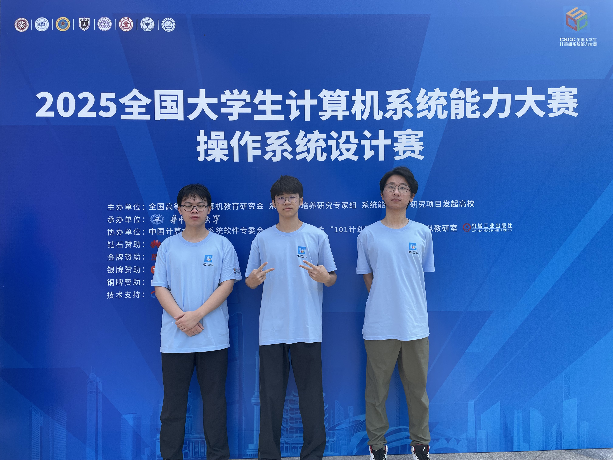
5.2.12 2025 年 · rustflyer · 内核实现¶
第五届内核赛道一等奖：rustflyer
团队成员：关雄正，23级本科；冼志炜，23级本科；王峻阳，22级本科
“非常荣幸能够获得内核赛道的一等奖。在这场为期九个月的竞赛中，我们为NighthawkOS内核贡献了超过4万行Rust代码，提交了近千次commit，最终在RISC-V和LoongArch双架构上取得了决赛线上线下双高分的成绩。这一成绩凝聚了我们团队无数的努力与坚持。
大二寒假前看到校内操作系统比赛的招新通知，我们三人决定组队挑战这个"酷"的项目。彼时雄正做过xv6和PA实验，峻阳完成了操作系统课程并有科研经历，志炜算法基础扎实，三人的技术背景形成了良好互补。我们从寒假便开始为比赛做准备，先用三周时间系统学习Rust语言和rCore Tutorial，再从零开始编写自己的操作系统内核。对于我们这些相对基础薄弱的参赛者，这是一个巨大的挑战。然而，比赛提供了一个开源的平台，使我们能够接触到往届所有优秀作品的代码实现，这不仅降低了参赛的难度，也让我们在学习和模仿优秀作品的基础上快速成长。
我们从参赛之前的寒假开始合作学习Rust编程语言，同时参照rCore初步学习如何编写、构建简单的操作系统内核。3月开始着手编写自己的内核，我们形成了先确定内核模块总体框架，再分工完成各个模块的协作方式。由于对内核与硬件相关的部分较不熟悉，我们先为RISC-V架构实现内核，在此过程中阅读学习LoongArch架构的文档，之后从内核中抽离出硬件抽象层，使内核为两种架构提供易维护的统一支持。初赛时由于没有充分重视LTP测例集的高分占比，我们排名第九。决赛阶段我们痛定思痛，集中攻克LTP高分测例，最终获得了LTP分数榜单第一名，为后续评选赢得了相当重要的优势。在决赛后半程，我们将内核部署到真实开发板上运行，发现并修复了许多隐藏的缺陷。在现场赛的最后一天，当我们看到颁奖典礼上出现队伍名字的那一刻，我们感到无比自豪。
在从零实现内核的过程中，我们对操作系统底层机制的理解更加深入，编程能力也在实战中得到了极大的提升。半年多的参赛历程，让我们对计算机操作系统内核的各个组成部分有了深入的理解，拓宽了小组成员的技术栈，为未来的研究工作方向提供了新的选择。比赛要求小组成员之间明确分工、密切合作，培养了我们的团队合作能力。操作系统领域包罗万象的技术知识，不仅满足了求知欲，也增强了我们的思维能力、丰富了我们的技术工具。从备赛到决赛的九个月持久努力，磨砺了我们的耐心定力，也使我们具备了进行长线项目开发的能力。
对于下一届参赛同学，我们的建议是：首先要熟悉比赛的主流编程语言Rust，借助rCore等项目深入理解操作系统实现。一定要结合比赛官方的评分标准和导向进行开发，切勿忽视任何高分测例集。尽早开始内核构建，决赛现场赛时间紧张，务必在出发参赛之前完成计划中的内核功能。要重视指导老师对往届参赛经验的提炼，有针对性地丰富内核功能。最重要的是，小组成员之间要密切交流，有问题及时反馈，确保能够同舟共济，坚持到底。
参赛的满满收获，使我们确信，参加操作系统竞赛对于追求知识与卓越的学子而言，是正确的选择。最后，衷心感谢实验室老师在整个比赛过程中给予的支持与帮助，感谢往届学长的宝贵经验传授，使我们在技术和思路上少走了很多弯路，也期待下一届参赛作品能够站在我们的肩膀上更进一步。”
作品开源：点这里
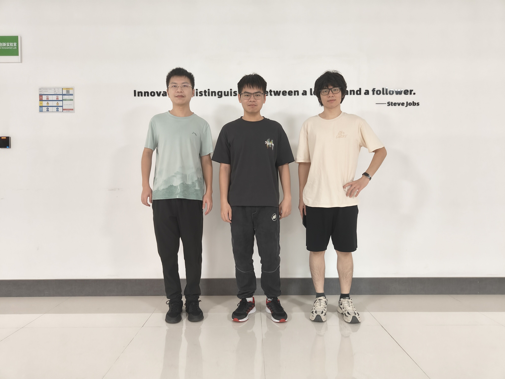
5.2.13 2025 年 · Del0n1x · 内核实现¶
第五届内核赛道一等奖：Del0n1x
团队成员：姚俊杰，22级本科；林顺喆，22级本科；卢家鼎，22级本科
“我们是2025年OS内核赛道队伍Del0n1x，队员均来自22级计算机专业。
作为大三学生，我们刚学习完操作系统专业课，抱着希望更加深入了解内核的想法，同时考虑到内核赛道代码量大，想借此机会提高自己的代码专业能力，我们组队参加了内核赛道，这个过程虽然十分枯燥，但是在队员们的坚持下最终有幸获得了一等奖。
在备赛过程中，队员之间需要有高效的沟通能力，避免重复的工作。在遇到bug卡过长时间时，可以和其他队友积极沟通，可能会有奇效。Del0n1x基于rcore的ch5分支开始，这减小了前期的开发压力，我们也十分推荐清华rcore实验，作为入门同学来说是特别友好的学习资料。
通过这次比赛，我们对内核有了更加深入的了解。相较于课堂上的宏观概念，比赛提供我们一个上手实现这些概念（分页分段、信号处理等）的机会。同时我们也获得了竞赛加分，对我们后序升学和找工作有极大的帮助。
对于希望通过比赛找内核方向实习和提高代码能力的同学，操作系统设计赛值得一试。可以从rcore开始学习，然后多多阅读往届优秀作品的设计文档和代码。最后如果实现新功能有难度，Linux源码会给大家答案。”
作品开源：点这里
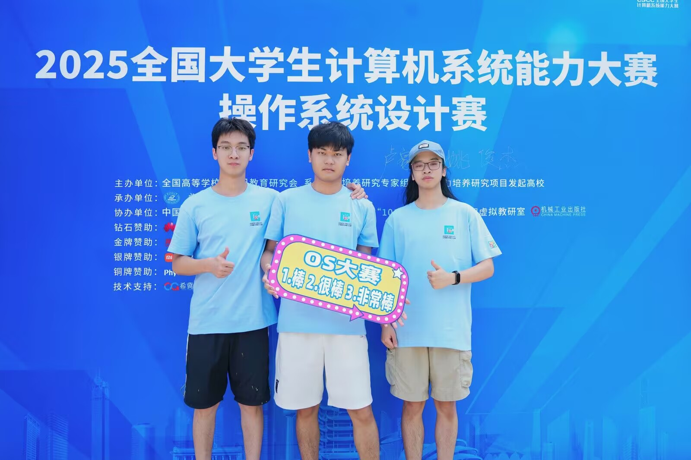
5.2.14 2025 年 · 我重生了这一世我要夺回属于我的OS赛冠军 · 功能设计¶
第五届功能赛道一等奖：我重生了这一世我要夺回属于我的OS赛冠军
团队成员：李紫剑，23级本科；冯锦坤，23级本科；郑旭晖，23级本科
“很荣幸能获得操作系统功能赛道的一等奖，这离不开老师数个月来的悉心指导。
我们最初组队时，队伍成员均为大二，大多没有操作系统相关的经验，大家都是抱着试一试的学习心态来参加比赛的。但正如我们的队名“我重生了这一世我要夺回属于我的OS赛冠军”所言，我们每个人心中都有一个拿奖的梦想。我们的项目是一个轻量级堆内存异常检测工具，融合了静态程序分析，动态程序分析，系统态异常检测等多种技术。从最初选题到确立方案，再到最终实现，我们的项目经历了多次大设计与代码上的大重构，从最初设想时一个简单的静态分析工具，到动静结合再到用户态系统态相结合。每一次重构都代表着队伍对项目的理解更深入一步，也代表着队伍成员技术能力的提升。
除了技术方面上的挑战，我们面对的另一大挑战便是时间管理。初赛提交的时间点正值期末考试周，队伍成员需要在备考与项目开发之间找到平衡。同时，决赛主要时间正值暑假，我们还需在实习与比赛之间平衡时间分配。这一部分指导老师给予了我们很大的帮助，帮助我们合理规划项目进度与时间安排，确保我们能高效地推进项目开发。
参加本次比赛，我们收获颇丰。我们深入理解了现代程序分析的基本思路，掌握了静态与动态程序分析的相关技术，阅读了大量相关论文，积累了科研经验。同时，团队协作能力得到了锻炼。我们学会了如何高效地分工合作，如何在遇到分歧时进行有效沟通与协调，也学会了如何分配规划比赛时间。
最后，对于下一届的参赛同学，我想说的是，想象力和毅力是关键。想象力让我们突破现有框架，而毅力则让我们的想象成真。也不要惧怕犯错和重试，正是这些经历让我们不断成长。希望大家都能在比赛中收获满满，取得优异成绩。也希望大赛越办越好！”
作品开源：点这里
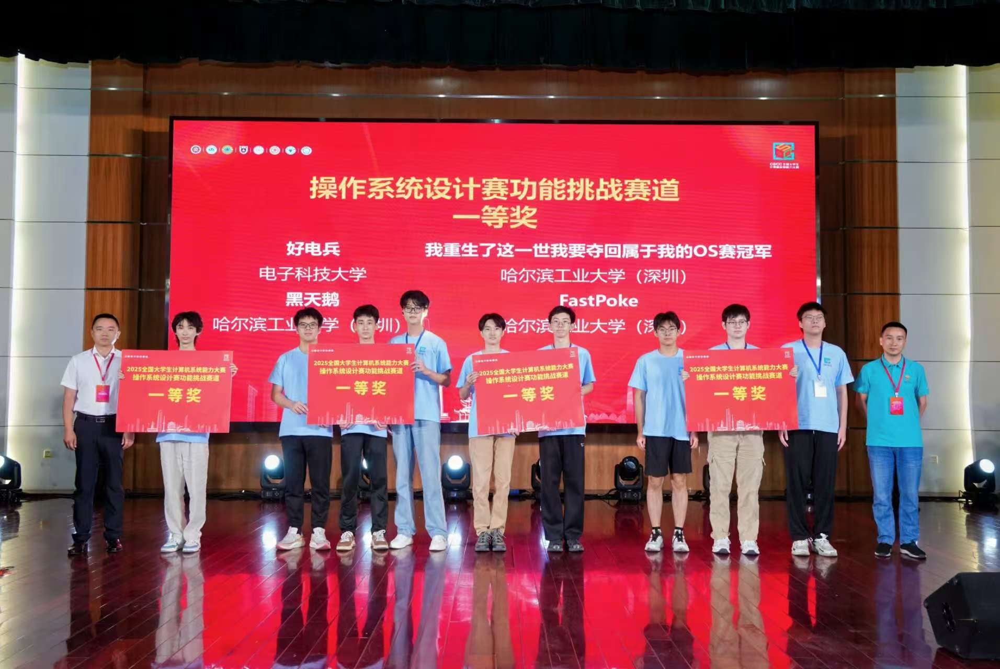
5.2.15 2025 年 · 黑天鹅 · 功能设计¶
第五届功能赛道一等奖：黑天鹅
团队成员：覃煜淮，22级本科；周健毅，22级本科；岳亮，22级本科
“我是25年OS赛黑天鹅的队长覃煜淮，团队成员还包括周健毅，岳亮，共三人。我们三人均为22级本科生，对于系统方向我们在技术上起初其实并没有特别大的优势，但我认识的时间较长，沟通合作起来会更为方便，更重要的是，我们都有坚定的目标，我认为一个坚定的目标在整个赛程中是最大的优势，以目标为导向能让自己更快地梳理自己需要做的工作，让自己第一时间采取行动而不是畏难放弃，以我个人而言，在整个备赛五个月期间，我除了考试周和应付一些必要的事情外，拒绝了各项杂事，基本每天保持着8小时以上的投入，才让我们的项目从跑通到逐步优化都保持着一个较为理想的进度。
我们最初最朴素的目标是获得加分，这个目标从我们去年11月份组建起队伍就一直没变过，不过随着比赛进度不断推进，到了大概5月底左右，我越来越想把这个东西从代码结构，仓库建设，文档建设等方面都规范化，也更希望更多地了解这个赛题的问题以及如何针对性地解决，坚持到后面就慢慢的习惯了与这个赛题打交道的日子了。
操作系统比赛的问题其实已经是比较前沿的难题，可以说我们当时能够参考的工作少之又少，因此当时我们从测评环境到整体框架的搭建，都得参考多个仓库，阅读不少代码，找到其中能够符合我们真实需求的部分，通过改变接口最终缝合在一起，并且遇到问题时得多翻阅文档与源码，找到问题原因最后修改接口。因此要比其他工作找到一个baseline作为基础跑通后进行优化更为困难，对代码的理解以及工程能力可能考验会更高（当然要是有一个能够复现的baseline的那最好还是选择在baseline基础上优化）。
整个过程周期较长，正反馈不足，并且成员可能因为其他要主导的工作无法时刻参与，及时明确的沟通协作是很必要的，最重要的是及时和明确，我们因为线下经常碰面所以比较方便。在最坏的情况下，队员都有其他事情时，也可以多多相信自己，坚持下去都会有好结果，因此整个赛程中，个人感觉自己坚持解决问题的毅力大于合作良好的队友大于大佬队友。
竞赛收获还是很大的，对一个项目从头到尾的各个流程各个细节都经历了一遍，对个人的能力的提升还是巨大的。但其实更庆幸的是第一次比较完整的项目经历是一个值得探索的难题，本届赛题方代表老师也说，做难且正确的事情。无论日后做的什么方向，感觉务必要形成自己的思考与完整架构而不是盲目追新，对于解决比赛问题亦或是往后的科研问题，我认为比较重要的两点是，1. 明确自己要解决的问题是什么，这里包含（1）认识到当前问题存在什么问题/当前技术存在什么不足，（2）什么原因导致这些不足，我认为只有这样才能够做到在当前各领域技术迭代很快的情况明白什么方法是真正对我们自己解决问题真正有用的，是根据钉子造锤子，而不是拿着锤子找钉子。在我们比赛的过程中，明确的问题能够让目标特别清晰，接触到新技术之后说不定就能合理地运用，这对于一个极长的周期无疑是有帮助的，当然对自己之后比赛文档的攥写也能打一个较好的起手式；2. 关注一个方法在看完它的流程后更重要的还是了解方法为什么有效果，比如看消融实验是哪一部分效果更好，为什么这部分好，这比方法本身更加重要。有了这样的思考才能明确自己遇到问题的时候应该采用什么方法解决。具体到比赛，按照以上方法调研，有了足够的积累，对比赛的路线“解决什么问题->问题存在的原因->提出解决方法的motivation（可能别的领域已有方法为什么解决了某个问题就会是你的motivation）->提出的方法->方法怎么解决了这个问题->实验指标怎么证明解决了这个问题（实验设置和指标因为完整的思路就出来了）”自然而然就出来了。在比赛中收获的良师益友跟他们交流也会收获很多很多，成长只是潜移默化的事情。
从大往小了说，首先自己的坚持最重要，有明确的目标导向相信大家都能坚持下去，人在一段时间内只能全身心投入一件事请，目标不明确不坚定很容易会这也觉得有时间那也觉得有时间最后丢了芝麻也没捡到西瓜。队伍沟通要及时且明确，要是队友之间没有时间作为队长要及时调整，可以的话补上队友进度，确保把控着整体的进程符合预期。其次在比赛蓝图的确定时，明确问题，测试并找到合适的方法，motivation和实验设置自然而然会出现，一整个流程在比赛过程中保持清晰是很关键的。保持好可扩展性，这样之后的优化会变得是很简单的增量工作。最后具体到实施，明确问题可以多多读前沿的论文，要是论文数量很少的话，可以跟老师多沟通或是跟赛题方老师保持邮件联系因为他们就是做这个的，会给你不少的关于这个问题的见解，对于解决问题的方法，无聊追追新，多想想已有工作为什么取得效果，跑些实验，慢慢就能理解仍有的不足在哪，灵感也会慢慢来的，剩下就是不断地投入实现了
加油，相信自己的潜力，相信老师，争取破我们25年6个国一的记录૮₍ᵔ⤙ᵔ₎ა”
作品开源：点这里
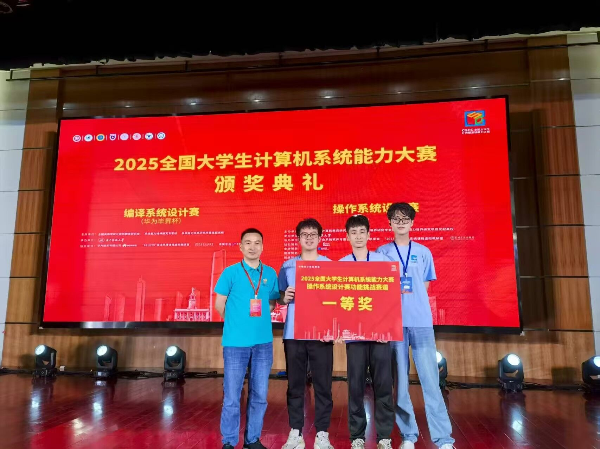
5.2.16 2025 年 · FastPoke · 功能设计¶
第五届功能赛道一等奖：Fastpoke
团队成员：许辰涛，22级本科；冯可逸，22级本科；赵胜杰，21级本科
“我们的团队组建于操作系统课程之后，由几位对系统底层原理与工程实践充满兴趣的同学共同发起。团队的组建经历了数次成员调整，最终确定为：许辰涛（大三/就业向）、冯可逸（大三/预计保研）、赵胜杰（大四/已保研）。我们的优势是两位成员都预计或已经保研，有充足的时间投入比赛的准备，同时团队成员之间较为熟悉，便于相互push。
在备赛过程中，我们设立的目标是： 以工程化思维构建可运行、可测量、可优化的系统作品 。团队成员的参赛动机各有侧重：部分已确定保研或准备就业的同学，希望通过本次竞赛积累系统级项目经验，丰富个人履历；而有保研意向的同学，希望提升科研与工程能力，同时为保研加分。
备赛过程与挑战：
技术方面：
- eBPF程序开发受验证器严格限制，需要在内核提前注册已经验证过安全性的eBPF helper函数来辅助实现复杂功能。
- FUSE I/O请求的绕过操作存在挑战，缓存的命中率不稳定，对于额外设置的直通路径，有较大的安全性风险，需要进行边界保护，比较内核数据、文件数据泄漏。
- CSD设备仿真存在挑战，该硬件技术未完全成熟，我们仿真实现CSD，需要基于SSD的模拟工具进行修改。
团队合作方面：
团队成员的时间安排和精力分配存在一定差异，这带来了一定挑战。为此，我们在备赛过程中进行了合理的任务分工：在比赛初期，由两位大三成员承担主要的系统开发工作；进入比赛后期，其中一位成员开始暑期实习，转而负责项目的文档撰写、技术报告和答辩展示等工作，其余两位成员继续推进核心开发任务。
这次比赛不仅让我们复习了操作系统的理论知识，更让我们学会了如何把理论转化为工程实现。并且在长期合作与问题攻关中，我们培养了良好的工程习惯、在迷茫时能冷静分析的心态，以及面对系统级 Bug 时的韧性:)，同时也收获了加分和奖金。最重要的是，学到了”做难且正确的事“这一信条。
致下一届同学的建议：
- 尽早确定方向与架构，建议在开赛初期就明确研究主题与技术栈，功能赛最好选择有深度且切合大赛主题的题目，有时候选择比努力更重要。
- 记录与总结，良好的文档记录会成为宝贵经验，在撰写报告时也有大用处。
- 别想那么多，干就完了，大家在比赛初期都会对选择的赛题有所畏惧，但是在老师的指导和团队的努力下，我相信最后都可以做到的。”
作品开源：点这里
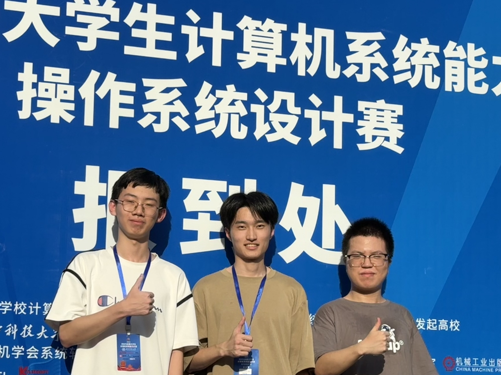
5.2.17 2026 年 · Unicus · 内核实现¶
第六届内核赛道一等奖：Unicus
团队成员：颜晨，23级本科；雷鑫言，23级本科；萧鹏，23级本科
“我们是2026年内核赛道的队伍Unicus，队员都是23级本科计算机科学与技术的学生。
作为大三的学生，当时应该是刚学完操作系统课程，在实验课的时候感受到OS实验课与其他科目的实验课截然不同的感受，并且在大三学分绩可能变动不是很大的前景下，抱着最朴素的目标：加分，于是我们便组成了一支队伍。
参赛历程
在那个时候，我们三个人中，我写了OS附加题，其余两名队友只写了课内实验。可以说一开始我们的基础其实和大家都一样，甚至很多大一大二的学弟们愿意花时间，一开始的基础是强于我们的。在12月份末，我们才开始下定决心要备赛，寒假期间队伍内每周开一次小会，交流一下最近Rust学到哪里了，rCore学到哪里了。因为我的原因，所以我们队伍一开始的进度是远落后于同期其他队伍的，我们开学才囫囵吞枣地过了一遍rCore基本课程，连里面的题目也没有认真做。到了差不多3月份，因为彼时的我对内核的整体架构其实还不熟悉，因此我们决定从rCore为基础出手，分工各个模块，然后在4月份左右开始完成去年的初赛评测，再往后就是无穷无尽的功能完善以及性能优化，跑榜单、等评测机等等。
参赛收获
首先是大型项目的维护吧，特别是在当今Vibe Coding的时代，良好的架构和文档以及模块化才能写出好的代码。然后深入了解了Rust，也深入了解了内核，看到了很多大一大二Linux的命令行背后的真实细节。关键还是学会了Vibe Coding，使用AI改bug、写文档、想idea等等。
给下一届同学的建议
一定要掌握AI，AI时代，掌握使用AI所带来的优势是完全可以让一支队伍从三等奖到一二等奖的，同时也不能被AI奴役，要有自己的看法，能够看出来AI的不合理。用好Git，方便回滚等等。然后多参考往届的内核，我们这一届的具体代码可能不太好参考，参考架构即可，然后注意性能，当今AI可以完成赛方的所有功能类型题目，但是真实开发板以及优化都要好好琢磨。然后在时间充足的情况下，可以做点新花样，比如图形化界面等等。
然后，加油，坚持到后面就是胜利，相信自己，相信夏老师、仇老师。多和同届的队伍一起交流，或者多咨询往届的学长。我们学校的参赛厚度就是最大优势。
最后的最后，感谢夏老师、仇老师的悉心指导，每周一次的组会真的能够让我们减少惰性，也感谢同届的其他几支内核参赛队伍，帮助我们队少走了很多弯路，感谢往届的学长，也感谢那时的我们。”
作品开源：点这里

5.2.18 2026 年 · ヰ世界电子开发部 · 内核实现¶
第六届内核赛道一等奖：ヰ世界电子开发部
团队成员：张正翰，24级本科；陈函申，25级本科
“能拿到内核赛道的一等奖很开心。
如果单看年级和人数，这支名为「ヰ世界电子开发部」的队伍的配置，应该可以说是很贫穷的样子。不过，其实我们有一定经验，在软件工程方面，和具体的、本次比赛关注的系统软件方面。tldr，我之前写过简单的宏内核，也写过微内核；陈函申也写过一些toy kernel/bootloader之类的东西。差不多十二月的时候我们组了队决定参加比赛。我从一月末开始建设内核，三月初，我们开始协同开发。
最初我们没太跟上时代，导致进度相当缓慢。我们属于那种「不能容许概率模型污染我的架构与代码」的类型。嗯，这种想法未免有点自大。不过总之，我们一直坚持古法手作到五月下旬，积累了接近50kloc。我想这个速度对于手写其实比较快了，尤其是，我们对代码质量的挑剔度也比较高。至此，系统架构的可扩展性依旧比较良好，读起来也很清晰，或者说，熵相对比较低。这些代码几乎全是基础设施，上层的syscall等面向用户的功能其实几乎没实现什么。也因此，我们在排行榜上完全是吊车尾的样子。不过呢，这个良好的codebase为此后深度vibe coding提供了很大的帮助。
竞争所迫，我们开始学习agentic coding，否则不就肯定狼狈地连初赛都无法通过了吗。总之经过很多，我们最后意识到ai coding并不等价于ai slopping，前提是，你具备足够的软件工程经验，以及对系统的各层面的把握，同时能准确描述你的需求。这比较难描述，但宽泛点说，具体到内核：兼容Linux，那么内核对Linux的感知要到什么程度，linux-agnosic很优雅，但是工程量会很大，有时几乎不可推行，反之，感知/侵入的程度越深，临时的实现更简单，但你因此继承的历史包袱也越多；一个错误，应该由谁负责，是上层的syscall handler，还是基础设施，应该返回error code，还是直接panic；基础设施需要提供哪些能力，到什么程度，哪些东西应该让上层功能自己解决；内核内，也分「业务」和「系统」，如何判断属于何者；再比如，需要意识到「兼容一种Linux能力的代价与收益」，有时，需要放弃全面的兼容，选择更可解释的实现。这种tradeoff会需要经常做。最后我们赶上了其他队伍，并在现场赛拿下了第二。
兼容Linux绝非一项漂亮的工作，它有很多地方相当丑陋；工程和理论存在不同取舍，前者往往需要考虑更多的现实约束，更关注所谓tradeoff。Linux面对不同的系统负载需要做复杂的权衡，而我们需要开发一个新的内核，不仅希望兼容Linux，接过来他此前面对过的那些workload，还需要考虑软件工程层面的权衡（也就是上述的Linux感知程度的问题），我想这也是一种meta要素（笑）。不过，不论如何，这的确让我们对系统设计有了更深刻的理解。
关于这项比赛的、具体的技术建议，若非处于AI时代，我认为有一大堆东西值得仔细提及；但现在我们的建议基本只有：请去学习一些经典内核（比起Linux，更建议看看BSD，Zircon，Plan9，etc.）的设计，然后了解他们为何这么做，是面对着怎样的问题，与LLM讨论，最后看看可以如何影响自己的内核设计。
很感谢老师们的细心指导。周会的压力很大，让我们完全无法松懈下来……然后，祝往后参赛的同学们好运哦。”
作品开源：点这里

5.2.19 2026 年 · 一起去爬梧桐山 · 功能挑战¶
第六届功能赛道一等奖：一起去爬梧桐山
团队成员：苏安炫，24级本科；李思甜，24级本科
“我们团队由两名大二的本科生组成。我是在大二招新时了解到的这个比赛，最初的想法是想通过完成一个项目，提升工程能力与项目经验。大二寒假期间，我查阅了往年赛题，学习了几个自己感兴趣的方向的一些知识，这也为我们选定赛题后能够比较快速地明确任务奠定了基础；而另一名同学在比赛前并没有相关经验，是在赛题确定后才开始学习的。
操作系统设计赛大概分为几个阶段：初赛阶段是3-6月，在这段时间内，参赛队伍需要确定选题、基本完成赛题目标，并在6月底提交作品仓库和参赛文档。我们队伍大概是在4月底确定的赛题，先花了一至两周的时间，根据赛题背景和要求查阅了大量资料，包括相关领域的综述、比较有代表性的工作和前沿成果，从而明确项目路线和团队分工。接下来的一个月，我们保持着以周为单位的项目开发周期，虽然在过程中也有遇到效果不及预期、甚至性能倒退的时候，但得益于老师的指导和团队成员的密切交流，最后也算是比较顺利地实现了预期目标。最后的两个周主要是参赛文档的撰写工作，彼时正值期末月，特别感谢李老师和张学姐的帮助，让我们能在分出大量时间和精力准备考试的同时完成好最后一项工作。至此，初赛阶段告一段落。
初赛结果大概会在提交初赛作品后两个周左右出炉，接下来是阶段性决赛作品准备阶段，周期大概是一个月，要求参赛队伍对初赛作品做进一步的迭代优化。对此，我们确立了两个基本方向：一方面是已有功能进行进一步的性能优化；另一方面是根据新的应用场景，做框架的适配拓展。因为小学期的缘故，我和队友都留在了学校，总体上保持着和初赛差不多的开发节奏。这一部分可以参考的工作相对有限，需要我们凭借前期的开发过程中积累的经验和思考，提出自己独到的想法。也就是这一部分内容，让我们最后在同赛题的队伍中脱颖而出。
八月中旬是最终决赛的时间，需要参赛队伍进行现场答辩，包括PPT展示和评委提问两个环节。答辩阶段我们发挥得并不好，现在回想起来还是心有余悸。但其实答辩并不是一件难事，只要答辩前充分熟悉项目、答辩过程中沉着镇定、讲好故事，最后的结果一般不会太差。
从最初的组队、到初赛作品的提交、再到最后决赛的答辩，在三个半月的时间里，我们遇到了许多困难与考验，整个比赛过程可以说是跌宕起伏。以至于最后拿到国一时，我们俩都有些不敢相信这是真的。这一份独特的比赛经历，不仅提升了我们的工程能力，也教会了我们在面对陌生领域的问题时，如何一步步思考、探索和解决。如果说有什么可以复用的经验，我想最重要的还是坚持。OS比赛参赛周期长，过程中难免会与其他事情冲突，这就需要我们做好平衡甚至是取舍；同时系统的工作由于其特性，常常难以一蹴而就，需要我们保持耐心与定力。除此以外，和队友、老师的交流也不可或缺。即使老师研究的内容与你的赛题方向不一致，但一些思考问题的角度、解决问题的方法论，会让你在某个时刻灵光一现。而团队成员之间的交流，不应只局限在对进度上，我们会向对方分享自己的灵感、会尝试思考对方遇到的问题该怎么解决，从而避免思维陷入局限，这也是我觉得团队工作的魅力所在。
最后，衷心感谢夏老师和李老师的指导和帮助，祝接下来的参赛队伍再创佳绩！”
作品开源：点这里

5.2.20 2026 年 · 故障机器人 · 功能挑战¶
第六届功能赛道一等奖：故障机器人
团队成员：陈浩，24级本科；王鹏杰，24级本科；王英基，24级本科
“很荣幸能够在本次操作系统设计赛功能挑战赛道中获得一等奖。我们三人都是24级本科生，抱着试一试的心态组队参赛，没想到一路走到了全国总决赛一等奖的领奖台。
我们的项目是基于 XiUOS 的具身智能‘小脑’实现方案探索（赛题编号 proj36）。人形机器人关节的电流环控制周期只有50–100μs，要求操作系统具备微秒级确定性中断响应，而工业界主流 FOC 方案多为闭源固件，难以自主定制，国产泛在操作系统 XiUOS 在具身智能关节控制领域还是一片空白。我们把 XiUOS 宏内核移植到电机控制专用 MCU STM32G474RBT6，以 20kHz HRTIM 中断驱动 FOC 闭环，从零自研了 Clarke/Park/SVPWM、抗饱和 PI 与摩擦补偿算法栈，还逆向了乐聚 Kuavo 机器人关节的 Motorevo CAN PTM 协议，实现了与厂商参数工具兼容的在线调参和 Flash 参数持久化。最终 20kHz 电流环稳定运行，14 项单元测试全部通过，固件成功烧录进 Kuavo 手臂关节驱动板实机运行——让 XiUOS 完成了从‘工业物联网操作系统’到‘具身智能操作系统’的跨越。
赛前我们只是刚入学不久的新生，对操作系统内核和电机控制几乎没有概念。从读懂 XiUOS 内核的第一行代码，到独立完成宏内核移植、链接脚本编写、HRTIM/ADC/CAN 全栈驱动，每一步都是靠翻手册、写测试、调波形‘啃’出来的。
给下一届同学的建议：尽早选题、尽早动手，尤其是像功能赛里这种有硬件的选题，需要尽量压缩工期防止意外的损坏造成的返厂维修；要积极和赛题方，还有提供器件的厂家沟通，尽力拿到能获得的所有资源；同时要保证自己的作息良好，避免出现万策尽的感觉；答辩的良好心态也是不可或缺的，不要因为台下一群严肃的老师就自乱阵脚；这些大概是我想交给后来者的经验或者教训吧。
特别感谢指导老师，在方向选择、文档规范和答辩准备上给予的耐心指导。愿大赛越办越好，也期待更多学弟学妹在系统能力的道路上走得更远！”
作品开源：点这里

6. 报名方式¶
📢 如何报名？
我校OS比赛将预计在元旦节前后（具体时间待确定）开放报名。现在参加操作系统大赛，将获得退休选手的宝贵参赛经验，机会难得！感兴趣的同学欢迎入群：
操作系统是计算机领域的一大核心，
深入理解操作系统，不管以后参与到哪个方向的工作中，都会从中获益。
欢迎参加操作系统设计赛，体验系统设计的独特魅力。